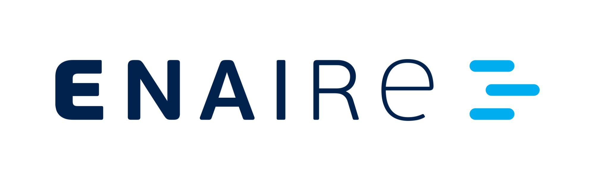
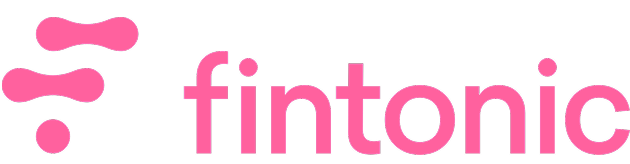
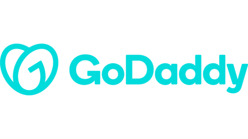

QA Automation Engineer. Testing E2E, de API y de rendimiento integrado en tu pipeline de CI/CD — para que el bug lo encuentre yo en staging, no tu cliente en producción.
+ Cofundador de SolvoFlow — automatización de procesos con IA.
QA Automation Engineer con +5 años ayudando a equipos de desarrollo a subir su cobertura de tests automatizados, acortar el tiempo de regresión y encontrar los bugs críticos antes de que lleguen a producción — no después.
Disponible para proyectos freelance/B2B, soporte QA part-time y testing de release — remoto, en España y a nivel internacional.
Suites de regresión para flujos críticos: alta, pago, autenticación. Corren en cada PR, no solo antes de release.
Validación de payloads, códigos de estado, cabeceras de auth y consistencia de datos entre servicios integrados.
Carga, estrés y rendimiento sostenido. Throughput, latencia P90/P95 y tasa de error bajo tráfico pico.
Suites conectadas a Jenkins y GitLab CI, con reporting y trazabilidad frente a requisitos.
Flujos de automatización fuera del ciclo QA (altas, CRMs, reporting interno) con integraciones vía API y webhooks, para equipos que quieren quitarse tareas manuales de encima.
Testing manual y exploratorio como complemento a la automatización, para los casos que un script no cubre bien.
Informes de release con bugs documentados y priorizados por severidad, listos para decidir qué bloquea el lanzamiento.
Automatizo la regresión E2E y el testing de API de un sistema de control aéreo de alta disponibilidad. En una auditoría de endpoints encontré una respuesta que ocultaba un error crítico bajo un código de éxito, lo documenté con evidencia completa y lo escalé como prioridad alta antes de que llegara a producción.
Diseño la suite de regresión E2E de una plataforma financiera de gran escala: autenticación por token, consistencia de datos en MongoDB y testing de carga bajo picos de tráfico real.
Diseño y mantengo sitios corporativos adaptados a necesidades de negocio, cuidando estructura de contenido, seguridad y accesibilidad para los usuarios finales.
Diseño y mantengo suites de testing automatizado (end-to-end, API y rendimiento) que corren dentro de tu pipeline de CI/CD, para detectar bugs críticos antes de que lleguen a producción. También cubro testing manual y exploratorio como complemento, e informes de release con bugs priorizados por severidad.
Sí. Trabajo en remoto con clientes en España y a nivel internacional, en modalidad freelance, B2B o como soporte QA part-time.
Playwright y Cypress para testing end-to-end en TypeScript, Postman para testing de API, JMeter para pruebas de carga y rendimiento, y GitLab CI/Jenkins para integrarlo todo en el pipeline.
Depende del alcance, pero una primera suite de regresión cubriendo los flujos críticos de un producto suele estar lista y corriendo en el pipeline en pocas semanas. En la llamada inicial reviso tu caso y doy una estimación concreta.
Sí, ofrezco soporte QA part-time además de proyectos completos de automatización — útil para equipos que necesitan cobertura de testing puntual sin contratar a tiempo completo.
Cuéntame el stack y el alcance del proyecto. Respondo en menos de 24h con una propuesta concreta.


